22 Análise do Estado do Roraima.
22.1 Informações Gerais.
22.2 Glebas Federais na Unidade da Federação.
22.2.1 Área com Glebas Federais.
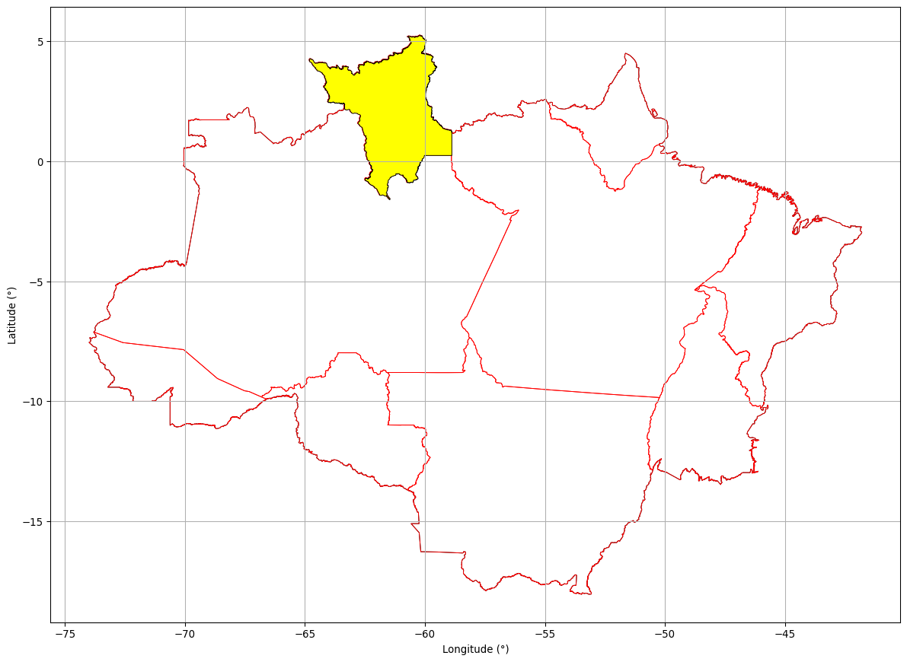
22.2.2 Área total de Glebas Federais no Estado do Roraima: 5.030,69 km²
22.2.3 Percentual do Roraima ocupado por Glebas Federais: 2,25 %
22.3 Florestas Públicas.
22.3.1 Florestas Públicas não destinadas.
Florestas Públicas do TIPO B (FPB) - São as florestas localizadas em áreas arrecadadas pelo Poder Público, mas que ainda não foram destinadas, de acordo com os dados baixados do Serviço Florestal Brasileiro.
fonte: Serviço Florestal Brasileiro
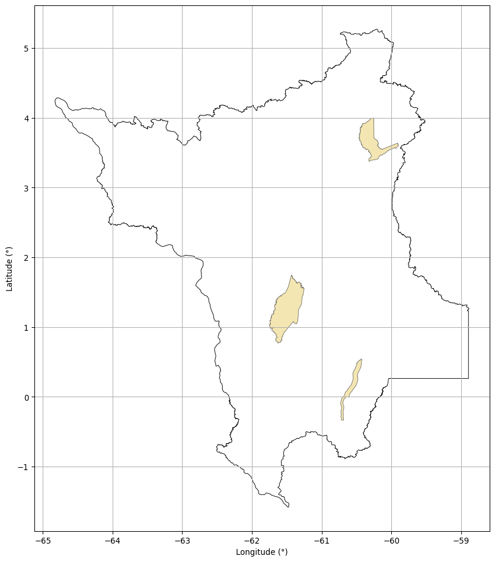
22.3.2 Área de Florestas Públicas não destinadas no Roraima: 30.177,41 km²
22.3.3 Percentual do Roraima ocupado por Florestas Públicas não destinadas : 13,49 %
22.4 Unidades de Conservação.
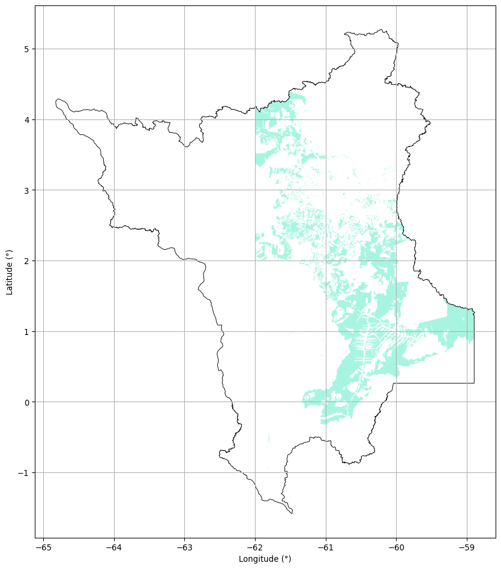
22.4.1 Área de Unidades de Conservação no Roraima: 62.486,11 km²
22.4.2 O Percentual do Roraima ocupado por Unidades de Conservação : 27,94 %
22.5 Terras Indígenas
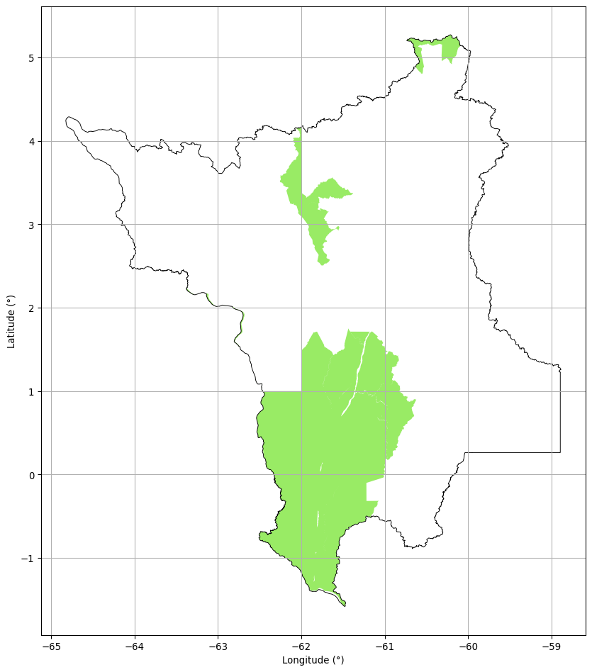
22.5.1 Área de Terras Indígenas no Roraima: 104.199,41 km²
22.5.2 O Percentual do Roraima ocupado por Terras Indígenas: 46,59 %
22.6 Projetos de Assentamento.
22.6.1 Área de Projetos de Assentamento no Roraima: 12.818,89 km²
22.6.2 O Percentual do Roraima ocupado por Projetos de Assentamento: 5,73 %
22.7 Territórios Quilombolas.
22.7.1 Não foi identificado Territórios Quilombolas demarcados no Roraima
22.8 Certificações Particulares (SIGEF).

22.8.1 Área de Imóveis Certificados no Roraima: 16.184,19 km²
22.8.2 O Percentual do Roraima ocupado por Imóveis Certificados: 7,24 %
22.8.3 O Estado do Roraima possui 2017 polígonos Certificados
22.9 Análise de Sobreposições.
As análises de sobreposições visam mostrar a sobreposição entre as classes de áreas públicas existentes para que possamos determinar se a relação é concorrente ou não. A análise será elaborada tendo as Glebas Federais como ponto pincipal sendo comparadas com Florestas Públicas não destinadas, Terras Indígenas, Unidades de Conservação e Projetos de Assentamento.
22.9.1 Glebas Federais sobrepostas a Florestas Públicas não destinadas.
22.9.1.1 Mapa Geral.
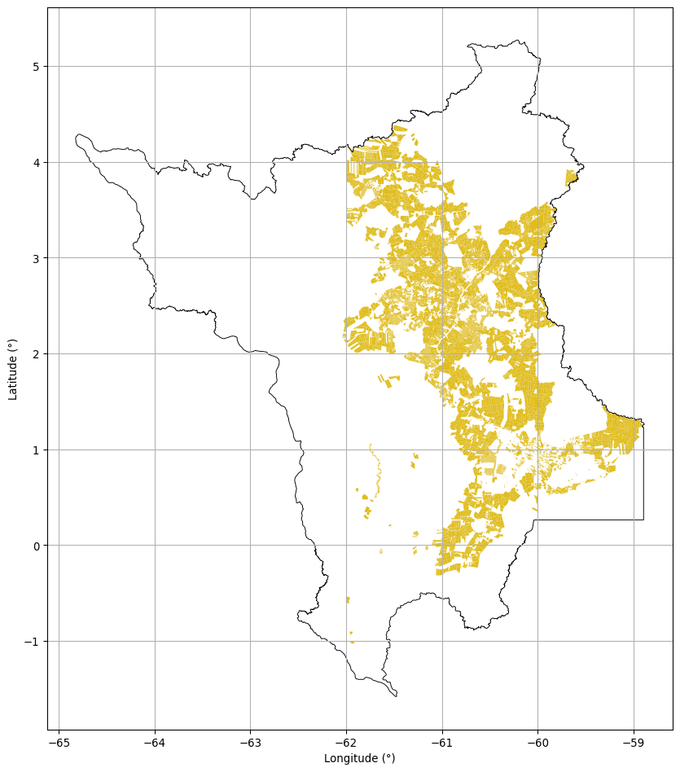
22.9.1.2 Glebas Federais com Floresta Pública não destinada.
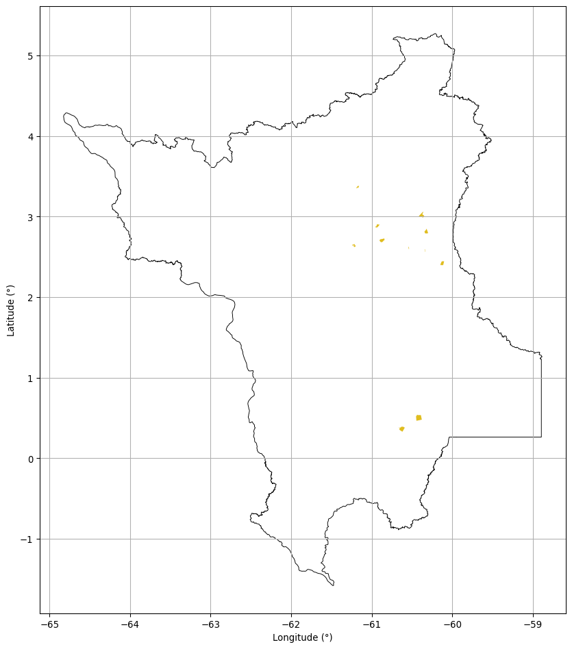
22.9.2 A área de Florestas Públicas não destinadas dentro das Glebas Federais no Estado do Roraima é de: 399,51 km²
Dos 30.177,41 km² de Florestas Públicas classificadas na base do Serviço Florestal Brasileiro, 399,51 km² estão sobrepostas aos polígons de Glebas Públicas Federais registrados na base de dados do INCRA.
22.9.3 Glebas Federais sobrepostas a Unidades de Conservação.
22.9.3.1 Mapa Geral.
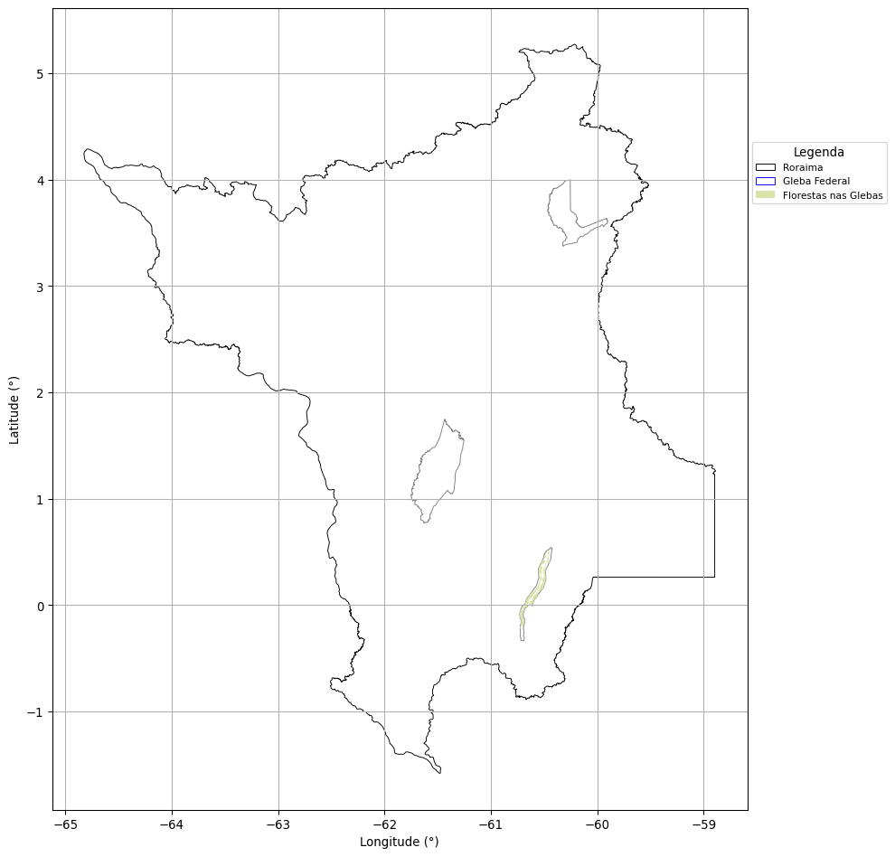
22.9.3.2 Glebas Federais com Unidades de Conservação.
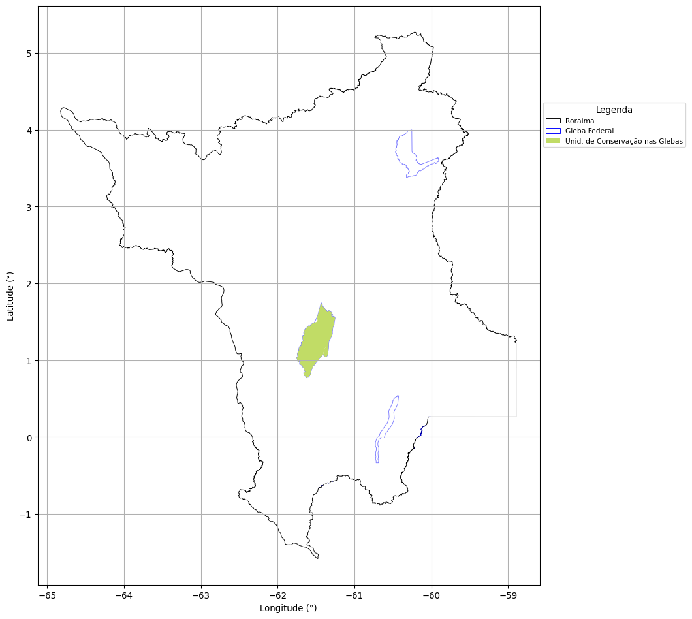
22.9.4 A área de Unidades de Conservação dentro das Glebas Federais no Estado do Roraima é de: 3.009,49 km²
Dos 62.486,11 km² de Unidades de Conservação, 3.009,49 km² estão sobrepostas aos polígons de Glebas Públicas Federais registrados na base de dados do INCRA.
22.9.5 Glebas Federais sobrepostas a Terras Indígenas.
22.9.5.1 Mapa Geral.
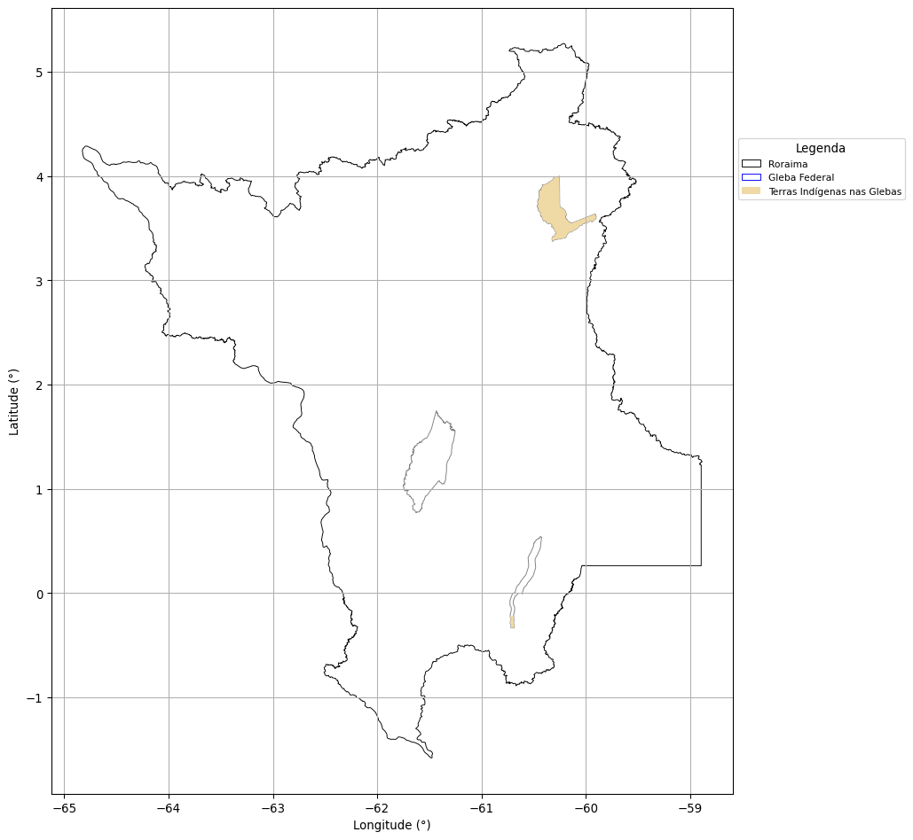
22.9.5.2 Glebas Federais com Terras Indígenas.
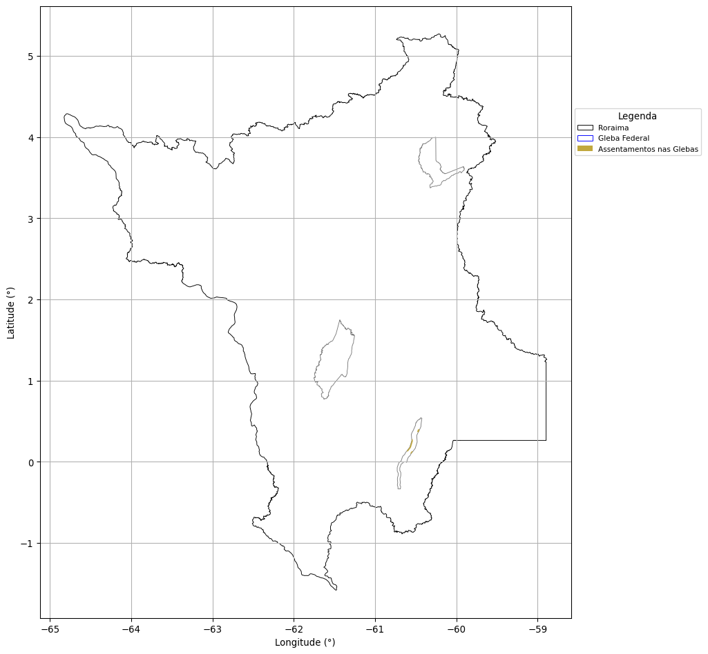
22.9.6 A área de Terras Indígenas dentro das Glebas Federais no Estado do Roraima é de: 1.532,71 km²
Dos 104.199,41 km² de Terras Indígenas, 1.532,71 km² estão sobrepostas aos polígons de Glebas Públicas Federais registrados na base de dados do INCRA.
22.9.7 Glebas Federais sobrepostas a Territórios Quilombola.
22.9.7.1 Mapa Geral.
22.9.8 Não há Territórios Quilobola demarcados no Estado do Roraima dentro de Glebas Federais.
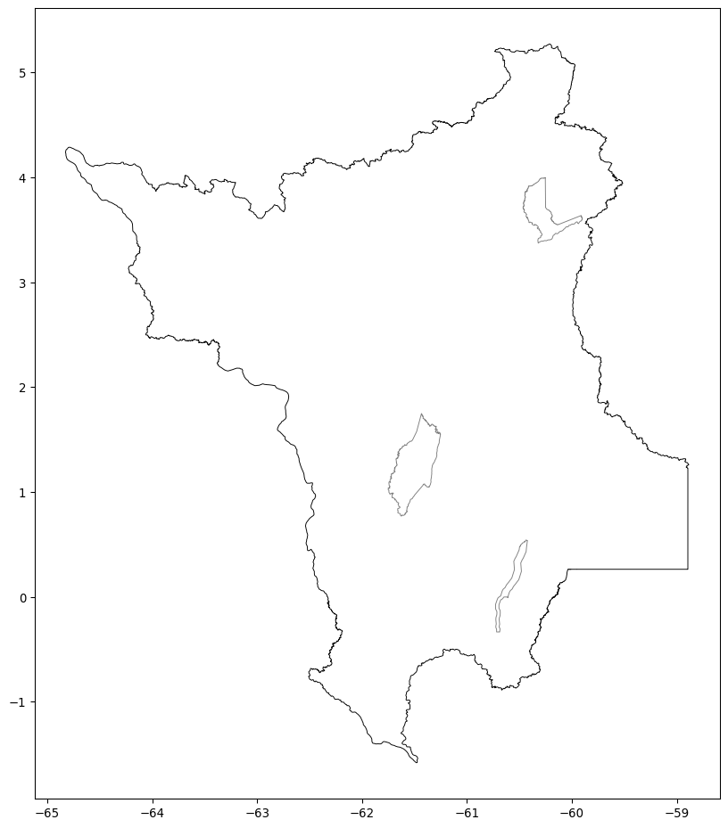
22.9.8.1 Glebas Federais com Territórios Quilombola.
22.9.9 Não há Territórios Quilobola demarcados no Estado do Roraima dentro de Glebas Federais.
22.9.10 Glebas Federais sobrepostas a Imóveis Certificados.
22.9.10.1 Mapa Geral.
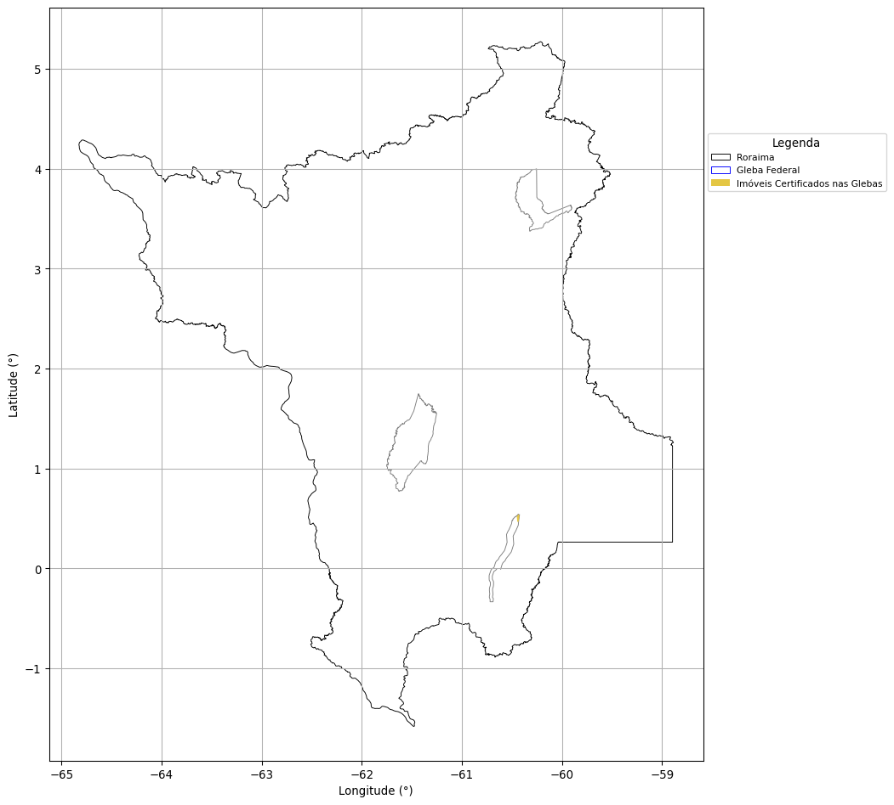
22.9.10.2 Glebas Federais com Imóveis Certificados.

22.9.11 A área de Imóveis Certificados dentro das Glebas Federais no Estado do Roraima é de: 131,74 km²
Dos 16.184,19 km² de Imóveis Certificados, 131,74 km² estão sobrepostas aos polígons de Glebas Públicas Federais registrados na base de dados do INCRA.